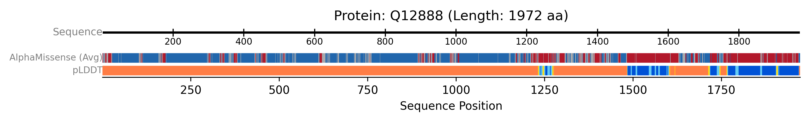

Visualising AlphaFold Data (pLDDT and AlphaMissense)
Here, we demonstrate how to fetch and display both pLDDT confidence scores and AlphaMissense pathogenicity predictions from the AlphaFold Database.
This script targets a human protein (Q9BYF1) for which AlphaMissense data is typically available. It uses AFDBClient to fetch both pLDDT scores and AlphaMissense predictions.
- An
AxisTrackprovides the sequence scale. - A single
AlphaFoldTrackis configured to display both plddt and alphamissense data. These are rendered as two separate, labelled sub-tracks within the AlphaFoldTrack group, allowing for direct comparison of model confidence and predicted variant impact along the sequence.
from protviz import plot_protein_tracks
from protviz.data_retrieval import AFDBClient, get_protein_sequence_length
from protviz.tracks import AlphaFoldTrack, AxisTrack
def main():
uniprot_id = "Q12888" # A human protein known to have AlphaMissense data
afdb_client = AFDBClient()
try:
seq_length = get_protein_sequence_length(uniprot_id)
print(f"Sequence length for {uniprot_id}: {seq_length}")
# Fetch both pLDDT and AlphaMissense data
alphafold_data = afdb_client.get_alphafold_data(
uniprot_id,
requested_data_types=["plddt", "alphamissense"]
)
print("Fetched AlphaFold data.")
if alphafold_data.get("plddt"):
print(f" pLDDT scores available: {len(alphafold_data['plddt'])}")
if alphafold_data.get("alphamissense"):
print(f" AlphaMissense scores available: {len(alphafold_data['alphamissense'])}")
# Create tracks
axis_trk = AxisTrack(sequence_length=seq_length, label="Sequence")
# Create a single AlphaFoldTrack to display both data types
alphafold_multidata_track = AlphaFoldTrack(
afdb_data=alphafold_data,
plotting_options=["plddt", "alphamissense"], # Specify both to be plotted
main_label="", # Overall label for this group of AF tracks
plddt_label="pLDDT",
alphamissense_label="AlphaMissense (Avg)",
sub_track_height=0.1, # Height for each row (pLDDT, AlphaMissense)
sub_track_spacing=0.05 # Space between the pLDDT and AlphaMissense rows
)
# Plot the tracks
plot_protein_tracks(
protein_id=uniprot_id,
sequence_length=seq_length,
tracks=[axis_trk, alphafold_multidata_track],
figure_width=10,
save_option=True
)
print(f"AlphaFold example plot saved as {uniprot_id}_plot.png")
except Exception as e:
print(f"An error occurred during the AlphaFold example: {e}")
import traceback
traceback.print_exc()
if __name__ == "__main__":
main()
The previous example will generate a plot like this one:
